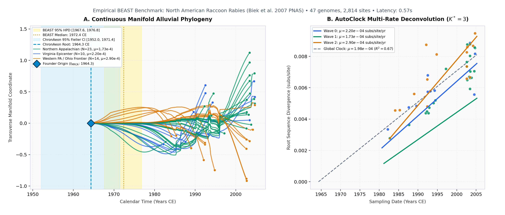

Tree-free molecular clock dating from sequence divergence.
ChronAeon is an open-source framework for estimating evolutionary rates and dating viral outbreaks directly from nucleotide sequences—without reconstructing phylogenetic trees or running Markov chain Monte Carlo (MCMC) simulations.
Standard molecular clock tools like BEAST infer outbreak origins by exploring millions of branching topologies via Markov chain Monte Carlo (MCMC) sampling. In active epidemics with hundreds or thousands of sequenced genomes, this tree search becomes a computational bottleneck. ChronAeon models temporal divergence directly as the accumulation of genetic distance from an ancestral profile, solving substitution rates and origin dates (tMRCA) in seconds via closed-form statistical regressions.
pip install chronaeon
Part of the HyphAeon evolutionary foundation ecosystem • veg/chronaeon ↗
Client-side WebAssembly/WebGPU • Sequence data never leave local memory (primaeon.org/time)
North American Raccoon Rabies: Emergence Dating & Multi-Rate Deconvolution in 0.57s
Biek et al. (2007) PNAS • Direct execution on author-deposited BEAST XML (data/16_rabies_northamerica_biek2007/beast.xml.gz)

Established transmission spanning MD, PA, NJ, and northern WV along the Delaware and Chesapeake river basins (μ = 1.73 × 10−4 subs/site/yr, R2 = 0.65).
The 1990s epidemic wavefront spreading rapidly through immunologically naïve raccoon populations across New York, New England (MA, NH, VT), and eastern Ohio (μ = 2.42 × 10−4 subs/site/yr, R2 = 0.80).
The historical translocation epicenter in Virginia, harboring basal isolates from the early 1980s and slower endemic circulation across VA, southern WV, NC, and TN (μ = 1.64 × 10−4 subs/site/yr, R2 = 0.53).
pip install chronaeon) and source (veg/chronaeon).Methodological Principles
Formulating molecular clock inference as an isometric manifold regression replaces the $\mathcal{O}((2N-3)!!)$ tree search space with closed-form linear algebra.
Continuous Manifold Dating
Aligned sequences are projected onto a continuous genetic distance manifold. Root-to-sample divergence is measured relative to an imputed soft profile root, avoiding heuristic root-to-tip searches.
Spectral AutoClock
Natural epidemics often involve multi-host jumps or lineage replacements with varying evolutionary rates. AutoClock applies graph spectral bisection on the sequence similarity graph to identify distinct clock regimes ($K^*$).
High-Throughput Streaming Sieve
Surveillance databases contain unverified sequences, frame shifts, and chimeric amplicons. A high-throughput streaming sieve filters isolates at 400+ sequences/second prior to downstream dating.
Tutorials & Practitioner Documentation
Operational step-by-step guides with runnable commands, reproducible datasets, and translation references.
Practical Molecular Clock Calibration & Emergence Dating →
Single-clock calibration protocol: sequence quality hygiene, codon reading frames, Denny-Fieller confidence bounds, and leave-one-out cross-validation (LOOCV). Replicates 2014 Cuban Zika virus emergence in 8.6 seconds.
chronaeon date --beast data/06_zika_cuba_grubaugh2019/beast.xml.gz --loocv
ChronAeon for BEAST Users: A Translation Guide →
Direct mapping between Bayesian MCMC concepts (priors, Tracer ESS, tree operators, UCLN relaxed clocks) and continuous manifold inference. Ingests shipped BEAST XML archives directly; replicates Carrington 2005 Dengue-4 in 0.14 seconds.
chronaeon date --beast data/tutorial_dengue4/beast.xml.gz --loocv
Real-Time Surveillance Validation
Validation on uncurated epidemiological surveillance streams spanning thousands of viral genomes.
NextStrain Influenza Feeds: Manifold Dating vs. TreeTime →
Live streaming ingestion from NextStrain Auspice feeds (Influenza A/H3N2 & H1N1pdm 12-year feeds). ChronAeon replicates TreeTime root calibrations (H1N1pdm: 2009.26 vs. 2009.27) without phylogenetic trees, while AutoClock ($K^*=2$) isolates post-lockdown clade replacement sweeps.
BV-BRC Influenza A/H3N2: Streaming Sieve & Multi-Clock Deconvolution →
Scaling to 58 years of Influenza A/H3N2 (1968–2026). The streaming sieve processes 10,000 isolates at 414 seq/s, filtering chimeric sequences and missing loci. AutoClock resolves $K^*=7$ clock regimes, separating accelerated wild waterfowl and swine reservoirs without metadata labels.
Empirical Concordance Compendium (42 Cohorts)
Tree-free manifold dating evaluated against published Bayesian MCMC (BEAST 1.x / 2.x) across 42 author-deposited empirical cohorts spanning 14,285 sequences (1882–2026). Ingests author-deposited BEAST XML configurations directly.
Empirical Concordance: Published BEAST MCMC vs. ChronAeon Geometric Manifold
Estimated time of most recent common ancestor ($t_\mathrm{MRCA}$) across empirical viral benchmarks (1850–2026 CE). Dashed diagonal represents identity ($y = x$). Hover to inspect study metrics; click to open full study dossier.